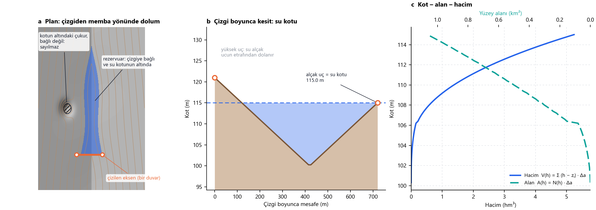

Nasıl çalışır
Çizgiden rezervuara
Her şey DEM'den hesaplanır.
Dört fikir
1 · Su kotu
Alçak ucun üzerinde su, çizginin etrafından dolanır.
h = min(zuçlar, sınırınız)
2 · Bağlı su
Yalnızca çizgiden ulaşılan hücreler sayılır.
sj = max(zj, si) ≤ h
3 · Alan
Su altındaki hücreler çarpı hücre alanı.
A(h) = N(h) · Δa
4 · Hacim
Her hücredeki su derinliğinin toplamı.
V(h) = Σ (h − zi) · Δa
Tek şekilde

Kaynak
Yöntem, Reservoir Creator 1.0'a (Faruk Gürbüz, 2021) aittir. Sürüm 2, su altındaki alanı eş yükselti eğrileri yerine doğrudan DEM üzerinde bulur.
| v1 | v2 | |
|---|---|---|
| Su kotu | çizginin kestiği en yüksek eş yükselti eğrisi | çizginin alçak ucu |
| Su altındaki alan | eş yükselti eğrisi + baraj ekseni | bağlı DEM hücreleri |
| Alan, hacim | N·Δa, Σ(h − z)·Δa | aynı |
Bağlantı adımı: Priority-Flood (Barnes vd., 2014).
Reservoir Creator · GNU GPL v3 · © 2021–2026 Faruk Gurbuz